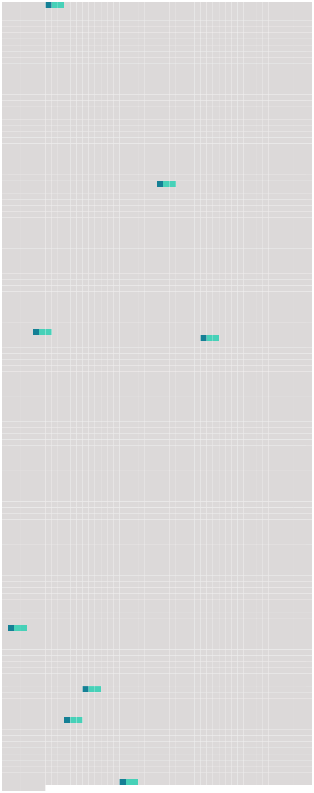

Longueur nb maillons : 8 mentions |
|
Derrière lui, sur le carreau de [la rue Rambuteau] , on vendait des fruits. [91 phrases] Sur le carreau de [la rue Rambuteau] , il y avait des tas gigantesques de choux-fleurs, rangés en piles comme des boulets, avec une régularité surprenante. [53 phrases] — Un bon garçon, cet Alexandre, dit Claude, quand ils se retrouvèrent tous les deux sur le trottoir de [la rue Rambuteau] [3 phrases] Une lueur claire, au fond de [la rue Rambuteau] , annonçait le jour. [82 phrases] Au fond de [la rue Rambuteau] , des lueurs roses marbraient le ciel laiteux, sabré, plus haut, par de grandes déchirures grises. [15 phrases] Ces tas moutonnants comme des flots pressés, ce fleuve de verdure qui semblait couler dans l'encaissement de la chaussée, pareil à la débâcle des pluies d'automne, prenaient des ombres délicates et perlées, des violets attendris, des roses teintés de lait, des verts noyés dans des jaunes, toutes les pâleurs qui font du ciel une soie changeante au lever du soleil ; et, à mesure que l'incendie du matin montait en jets de flammes au fond de [la rue Rambuteau] , les légumes s'éveillaient davantage, sortaient du grand bleuissement traînant à terre. [3 phrases] À l'autre bout, au carrefour de la pointe Saint-Eustache, l'ouverture de [la rue Rambuteau] était barrée par une barricade de potirons orangés, sur deux rangs, s'étalant, élargissant leurs ventres. [20 phrases] Au coin de [la rue Rambuteau] , debout au milieu des vitrines vides du grand magasin de nouveautés, des commis bien mis, en gilet, avec leur pantalon collant et leurs larges manchettes éblouissantes, faisaient l'étalage. |
 |
Il est possible de télécharger la ressource sur la page Ortolang |
Si vous avez des questions ou vous voyez des erreurs, merci d'envoyer un mail à silvia.federzoni89@gmail.com |